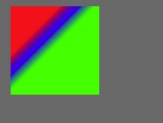

是Core Animation图层不仅仅能作用于图片和颜色而已。
补充点:
想UIView的图层上添加另外一个UIView的图层是会有两个UIVIew的（UIView的层级关系）
像一个纯Layer上添加另外一个UIView的图层,就仅仅只是添加了这个视图的图层,这个视图不会在视图的层级关系中体现.
CAShapeLayer
CAShapeLayer 是一个通过矢量图形而不是bitmap来绘制的图层子类.
即CAShapeLayer与CGPath搭配来绘制图形.与用Core Graphics直接向原始的CALyer的内容中绘制一个路径相比：
- 渲染快速（ CAShapeLayer 使用了硬件加速）
- 高效使用内存（CAShapeLayer 不需要像普通 CALayer 一样创建一个寄宿图形）
- 不会被图层边界剪裁掉（CAShapeLayer 可以在边界之外绘制）
- 不会出现像素化（当你给 CAShapeLayer 做3D变换时，它不像一个有寄宿图的普通图层一样变得像素化）
CGPath
CGPath来创建形状,一定要闭合,可以设置一些属性lineWith、lineCap 、lineJoin等,但是一个图层只有一次机会设置,如果想要想用不同颜色或风格来绘制多个形状，就不得不为每个形状准备一个图层了。
//create shape layer
CAShapeLayer *shapeLayer = [CAShapeLayer layer];
shapeLayer.strokeColor = [UIColor redColor].CGColor;
shapeLayer.fillColor = [UIColor clearColor].CGColor;
shapeLayer.lineWidth = 5;
shapeLayer.lineJoin = kCALineJoinRound;
shapeLayer.lineCap = kCALineCapRound;
shapeLayer.path = path.CGPath;
圆角
我们虽然可以用CALayer的cornerRadius可以设置圆角，但是我使用CAShapeLayer来单独指定每个角的形状.
CGRect rect = CGRectMake(50, 50, 100, 100);
CGSize radii = CGSizeMake(20, 20);
UIRectCorner corners = UIRectCornerTopRight | UIRectCornerBottomRight | UIRectCornerBottomLeft;
//create path
UIBezierPath *path = [UIBezierPath bezierPathWithRoundedRect:rect byRoundingCorners:corners cornerRadii:radii];
然后我们可以通过这个图层路径绘制一个既有直角又有圆角的视图,如果我们想依照此图形来剪裁视图内容，我们可以把CAShapeLayer作为视图的宿主图层，而不是添加一个子视图
CATextLayer
如果我们想要在一个图层中显示文字,我们可以通过借助图层的代理,直接将字符串用Core写入图层的内容-->这就是UILabel实现
Graphics
如果不用上面的方式,我们还有比较简单的方式:
Core Animation提供了一个CALayer的子类CATextLayer，它以图层的形式包含了UILabel几乎所有的绘制特性，并且额外提供了一些新的特性。而且CATextLayer也要比 UILabel 渲染得快得多
CATextLayer *textLayer = [[CATextLayer alloc] init];
textLayer.frame = self.textLayerView.bounds;
[self.textLayerView.layer addSublayer:textLayer];
//用retina屏进行渲染,否则文字会像素化
textLayer.contentsScale = [UIScreen mainScreen].scale;
//颜色 默认黑色
textLayer.foregroundColor = [UIColor yellowColor].CGColor;
textLayer.alignmentMode = kCAAlignmentJustified;
//这个属性为yes后为根据内容进行多行显示,Yes就是一行
textLayer.wrapped = NO;
UIFont *font = [UIFont systemFontOfSize:15];
CFStringRef fontName = (__bridge CFStringRef)(font.fontName);
CGFontRef fontRef = CGFontCreateWithFontName(fontName);
textLayer.font = fontRef;
//字体大小是单独设置的
textLayer.fontSize = 10;
//设置显示字体
textLayer.string = @"zhe shi yi ge textLayer";
CATextLayer 的 font 属性不是一个 UIFont 类型，而是一个 CFTypeRef 类型。这样可以根据你的具体需要来决定字体属性应该是用 CGFontRef 类型还是 CTFontRef 类型（Core Text字体）。
因为 CTFontRef 和 CGFontRef 并不像UIFont一样包含点大小，因此我们需要单独设置字体大小;
CATextLayer 的string属性是id类型的，因此我们可以用NSString和NSAttributedString来指定文本。 注意， NSAttributedString 并不是 NSString 的子类。属性化字符串是iOS用来渲染字体风格的机制，它以特定的方式来决定指定范围内的字符串的原始信息，比如字体，颜色，字重，斜体等。
富文本
iOS6之后，苹果给UILabel和UIKit添加直接的属性字符串支持.从iOS3.2开始 CATextLayer 就已
经支持属性化字符串了(可以这样支持低版本 不过他吗太低了吧)。
我们可以看下CATextLayer的富文本:
//convert UIFont to a CTFont
CFStringRef fontName = (__bridge CFStringRef)font.fontName;
CGFloat fontSize = font.pointSize;
CTFontRef fontRef = CTFontCreateWithName(fontName, fontSize, NULL);
//set text attributes
NSDictionary *attribs = @{(__bridge id)kCTForegroundColorAttributeName:(__bridge id)[UIColor blackColor].CGColor,
(__bridge id)kCTFontAttributeName: (__bridge id)fontRef};
[string setAttributes:attribs range:NSMakeRange(0, [text length])];
attribs = @{(__bridge id)kCTForegroundColorAttributeName: (__bridge id)[UIColor redColor].CGColor,
(__bridge id)kCTUnderlineStyleAttributeName:@(kCTUnderlineStyleSingle),(__bridge id)kCTFontAttributeName: (__bridge id)fontRef};
[string setAttributes:attribs range:NSMakeRange(6, 5)];
//release the CTFont we created earlier
CFRelease(fontRef);
//set layer text
textLayer.string = string;
行距和字距
由于绘制的实现机制不同（Core Text和WebKit），用 CATextLayer 渲染和用 UILabel 渲染出的文本行距和字距也不是不尽相同的。(影响不大)
UILabel替代品
CATextLayer 比 UILabel 有着更好的性能表现,虽然UILabel很好用,但是如果我们非要找个UILabel替代品的话,有以下方法:
继承 UILabel后添加一个子图层 CATextLayer 并重写显示文本的方法。
但是仍然会有由UILabel的-drawRect:方法创建的空寄宿图。而且由于CALayer不能自动布局,我们不能根据内容自动方法图层.用 CATextLayer 作为宿主图层的 UILabel 子类
每一个UIView都是寄宿在一个CALayer的示例上。这个图层是由视图自动创建和管理的，这个图层一旦被创建就无法替代,但是我们可以继承了UIView，重写其+layerClassUIView 会在初始化的时候调用 +layerClass 方法，然后用它的返回类型来创建宿主图层。
把 CATextLayer 作为宿主图层的另一好处就是视图自动设置了 contentsScale 属性。
用 +layerClass 来创建基于不同图层的视图是一个简单可复用的方法
CATransformLayer
我们之前说过所有图层都把他的子图层平面化到一个场景中,因此没法做出3D的层级体系变换.CALayer中存在CATransfromLayer，它不同于一般图层，它不显示自己内容，只有当存在了一个能作用于子图层的变换它才真正存在。
我们在前面创建过一个立方体的固体对象,但是因为这次我们是向CATransformLayer上添加图层，而不是之前的contaninView,我们不能向一个没有寄宿图的图层上添加有寄宿图图层(就是不能向一个不是UIVIew的Layer中添加另外一个UIView的layer，否则在视图体系中显示的添加的这个不是视图而是图层),因此我们选择向CATransfromLayer添加立方体图层.
//举一段代码栗子
//create cube layer
CATransformLayer *cube = [CATransformLayer layer];
//add cube face 1（添加立方体的一个面）
CATransform3D ct = CATransform3DMakeTranslation(0, 0, 50);
//[self faceWithTransform:ct] 这个方法根据Transform3D返回了一个这种变换的图层
[cube addSublayer:[self faceWithTransform:ct]];
//添加6个面后
...
//center the cube layer within the container
CGSize containerSize = self.containerView.bounds.size;
cube.position = CGPointMake(containerSize.width / 2.0, containerSize.height / 2.0);
/**
设置这个立方体的旋转（我们可以不用设置containerView的subTransform属性来进行立方体变换,而且可
以有几个立方体就能变换几种）
*/
cube.transform = transform;
//设置contaninView的sublayerTransform保证透视和灭点
CATransform3D pt = CATransform3DIdentity;
pt.m34 = -1.0 / 500.0;
self.containerView.layer.sublayerTransform = pt;
//将不同形状的cube添加
[self.containerView.layer addSublayer:cube1];
CAGradientLayer
CAGradientLayer是用来生成两种或更多颜色平滑渐变的（绘制使用了硬件加速）.
CAGradientLayer只适合做这种渐变没法定制,例如做环形渐变等,那样的话只能用Core Graphic了
基础渐变
这是最简单的渐变,这些渐变色彩放在一个数组中，并赋给colors(CGColorRef类型)属性。
CAGradientLayer 也有startPoint和endPoint属性，他们决定了渐变的方向。这两个参数是以单位坐标系进行的定义，所以左上角坐标是{0, 0}，右下角坐标是{1, 1}。
CAGradientLayer *gradientLayer = [CAGradientLayer layer];
gradientLayer.frame = self.containerView.bounds;
[self.containerView.layer addSublayer:gradientLayer];
//set gradient colors
gradientLayer.colors = @[(__bridge id)[UIColor redColor].CGColor, (__bridge id)[UIColor blueColor].CGColor];
//set gradient start and end points
gradientLayer.startPoint = CGPointMake(0, 0);
gradientLayer.endPoint = CGPointMake(1, 1);

多重渐变
colors属性是个数组,因此可以设置很多颜色的多重渐变.默认这些颜色在我们指定的空间是均匀渲染的,但是我们可以设置location属性来调整空间。
location属性浮点型数组(以NSNumber包装),是以单位坐标(针对做渐变区域的单位坐标)系进行标定。0.0代表着渐变的开始，1.0代表着结束。
loaction属性不一定非要设置,但是如果设置了,数组大小一定要与colors数组大小相同,否则会得到白色渐变.
gradientLayer.colors = @[(__bridge id)[UIColor redColor].CGColor,(__bridge id)[UIColor blueColor].CGColor,(__bridge id)[UIColor greenColor].CGColor];
/**
这个数组的意义是0.0-0.25为红色到黄色的渐变区域,0.25-0.5为黄色到绿色的渐变区域,
0.5之后为绿色的完全区域
*/
gradientLayer.locations = @[@(0.1),@(0.5),@(0.9)];
gradientLayer.startPoint = CGPointMake(0.25, 0.25);
gradientLayer.endPoint = CGPointMake(0.5, 0.5);

CAReplicatorLayer
CAReplicatorLayer的目的是为了高效生成许多相似的图层。它会绘制一个或多个图层的子图层，并在每个复制体上应用不同的变换。
重复图层
instanceCount属性指定了图层需要重复多少次
instanceTransform 指定了一个 CATransform3D 3D变换，复制图层在被创建时产生的和上一个制图层的位移(位移的锚点是CAReplicatorlayer的中心点)
instanceDelay在短时间内的复制延时,一般用在动画上(支持动画的延时)
preservesDepth如果设置为YES,图层将保持于CATransformLayer类似的性质和相同的限制
instanceColor设置这些复制图层的颜色,默认位白色(注意有可能会和要复制的图层的颜色冲突)
变换是逐步增加的，每个实例都是相对于前一实例布局。因此这些复制体最终不会出现在同一位置上
CAReplicatorLayer *replicator = [CAReplicatorLayer layer];
replicator.frame = self.containerView.bounds;
[self.containerView.layer addSublayer:replicator];
//重复多少次
replicator.instanceCount = 10;
CATransform3D transform = CATransform3DIdentity;
transform = CATransform3DTranslate(transform, 0, 200, 0);
transform = CATransform3DRotate(transform, M_PI / 5.0, 0, 0, 1);
transform = CATransform3DTranslate(transform, 0, -200, 0);
replicator.instanceTransform = transform;
replicator.instanceBlueOffset = -0.1;
replicator.instanceGreenOffset = -0.1;
CALayer *layer = [CALayer layer];
layer.frame = CGRectMake(100.0f, 100.0f, 100.0f, 100.0f);
layer.backgroundColor = [UIColor whiteColor].CGColor;
[replicator addSublayer:layer];
由于我们设置了instanceBlueOffset和 instanceGreenOffset属性.的颜色也在变化.除了这两个还有instanceBlueOffset instanceAlphaOffset这都是改变某个颜色通道的值
CAReplicatorLayer 真正应用到实际程序上的场景比如：一个游戏中导弹的轨迹云，或者粒子爆炸（尽管iOS 5已经引入了 CAEmitterLayer ，它更适合创建任意的粒子效果）。除此之外，还有一个实际应用是：反射。
反射
创建一个指定视图的镜像照片,我们只需要使用CAReplicatorLayer并用一个负比例变换创建一个复制图层即可.
+ (Class)layerClass
{
return [CAReplicatorLayer class];
}
- (void)setUp
{
//configure replicator
CAReplicatorLayer *layer = (CAReplicatorLayer *)self.layer;
layer.instanceCount = 2;
//move reflection instance below original and flip vertically
//核心代码是这个动画
CATransform3D transform = CATransform3DIdentity;
CGFloat verticalOffset = self.bounds.size.height + 2;
transform = CATransform3DTranslate(transform, 0, verticalOffset, 0);
transform = CATransform3DScale(transform, 1, -1, 0);
layer.instanceTransform = transform;
//reduce alpha of reflection layer
layer.instanceAlphaOffset = -0.6;
}
- (id)initWithFrame:(CGRect)frame
{
//this is called when view is created in code
if ((self = [super initWithFrame:frame])) {
[self setUp];
}
return self;
}
- (void)awakeFromNib
{
//this is called when view is created from a nib
[self setUp];
}
这个镜像的是整个ReflectView视图内容(是视图层次)
因为现在这个VIew的layer已经变为CAReplicatorLayer所以我们对这个layer本身改变什么是不会镜像的,当然如果add的Layer内容也会被镜像
大神写的自适应渐变淡出效果的ReflectView
CAScrollLayer
之前我们显示大图层中的一小部分是使用图层的contentRect属性,但是如果我们想要滑动可视区域的话这样就不是很好的办法.
CALayey提供了一个子类CAScrollLayer.
CAScrollLayer 有一个 -scrollToPoint:方法，它自动适应 bounds 的原点以便图层内容现在滑动的地方。
因为Core Animation是不处理用户输入的,所以CAScrollLayer并不负责将触摸事件转换为滑动事件，既不渲染滚动条，也不实现任何iOS指定行为例如滑动反弹.
//来用 CAScrollLayer 来常见一个基本的 UIScrollView 替代品
+ (Class)layerClass
{
return [CAScrollLayer class];
}
//添加平移手势
//在平移手势中滚动视图
CGPoint offset = self.bounds.origin;
offset.x -= [recognizer translationInView:self].x;
offset.y -= [recognizer translationInView:self].y;
//scroll the layer
[(CAScrollLayer *)self.layer scrollToPoint:offset];
//reset the pan gesture translation
[recognizer setTranslation:CGPointZero inView:self];
//当然我们可以自己做边界检查
其实UIScrollView 并没有用 CAScrollLayer，事实上，就是简单的通过直接操作图层边界来实现滑动。
那么这个CAScrollLayer的作用是什么呢?
在CAScrollerLayer的头文件中有一个CALayer (CALayerScrolling)的扩展分类,实现了一些：
- (void)scrollPoint:(CGPoint)p;
- (void)scrollRectToVisible:(CGRect)r;
@property(readonly) CGRect visibleRect;
其实这些方法或者属性并不是给CALayer添加了滑动功能,事实上他们只是放置在CAScrollLayer中的图层的实用方法,scrollPoint:方法从图层树中查找并找到第一个可用的CAScrollLayer，然后滑动它使得指定点成为可视的。scrollRectToVisible:方法实现了同样的事情只不过是作用在一个矩形上的。visibleRect 属性决定图层（如果存在的话）的哪部分是当前的可视区域。当涉及到实现图层滑动的时候就可以用上了
CATiledLayer
我们有可能会需要加载一张高像素图片,这时候我们不适合读取整张图片到内存中,因为载入大图会非常的慢,将会阻塞线程造成卡顿.
能高效绘制在iOS上的图片也有一个大小限制。所有显示在屏幕上的图片最终都会被转化为OpenGL纹理，同时OpenGL有一个最大的纹理尺寸（通常是2048*2048，或4096*4096，这个取决于设备型号）。如果你想在单个纹理中显示一个比这大的图，即便图片已经存在于内存中了，你仍然会遇到很大的性能问题，因为Core Animation强制用CPU处理图片而不是更快的GPU
这时候我们可以用CATiledLayer,它可以将大图分解成小片然后将他们单独按需载入
CATiledLayer 很好地和 UIScrollView 集成在一起。
- (void)viewDidLoad
{
[super viewDidLoad];
//add the tiled layer
/**
CATiledLayer 很好地和 UIScrollView 集成在一起。除了设置图层和滑动视图边界
以适配整个图片大小，我们真正要做的就是实现 -drawLayer:inContext: 方法，当
需要载入新的小图时， CATiledLayer 就会调用到这个方法。
*/
CATiledLayer *tileLayer = [CATiledLayer layer];
tileLayer.frame = CGRectMake(0, 0, 2048, 2048);
tileLayer.delegate = self; [self.scrollView.layer addSublayer:tileLayer];
//configure the scroll view
self.scrollView.contentSize = tileLayer.frame.size;
//draw layer
[tileLayer setNeedsDisplay];
}
- (void)drawLayer:(CATiledLayer *)layer inContext:(CGContextRef)ctx
{
//determine tile coordinate
CGRect bounds = CGContextGetClipBoundingBox(ctx);
NSInteger x = floor(bounds.origin.x / layer.tileSize.width);
NSInteger y = floor(bounds.origin.y / layer.tileSize.height);
//load tile image
NSString *imageName = [NSString stringWithFormat: @"Snowman_%02i_%02i", x, y];
NSString *imagePath = [[NSBundle mainBundle] pathForResource:imageName ofType:@"jpg"];
UIImage *tileImage = [UIImage imageWithContentsOfFile:imagePath];
//draw tile
UIGraphicsPushContext(ctx);
[tileImage drawInRect:bounds];
UIGraphicsPopContext();
}
CATiledLayer 的默认以淡入的方式载入小图,可以用 fadeDuration 属性改变淡入时长或直接禁用
掉。
CATiledLayer （不同于大部分的UIKit 和Core Animation方法）支持多线程绘制，-drawLayer:inContext:方法可以在多个线程中同时地并发调用，所以请小心谨慎地确保你在这个方法中实现的绘制代码是线程安全的。
补充
我们在使用CATiledLayer *tileLayer = [CATiledLayer layer];时载入图片并不是以以Retina的分辨率显示,我们可以tileLayer.contentsScale = [UIScreen mainScreen].scale;我们只需要设
置了CATiledLayer的contentsScale即可(因为size是以像素为单位的,所以改变了contentsScale 就自动有了默认的小图尺寸),而不需要手工更新小图的尺寸或是在Retina分辨率下指定一个不同的小图。
我们需要做的是适应小图渲染代码以对应安排 scale的变化
CGRect bounds = CGContextGetClipBoundingBox(ctx);
CGFloat scale = [UIScreen mainScreen].scale;
NSInteger x = floor(bounds.origin.x / layer.tileSize.width * scale);
NSInteger y = floor(bounds.origin.y / layer.tileSize.height * scale);
CAEmitterLayer
iOS后引入了一个新的 CALayer 子类叫做 CAEmitterLayer
CAEmitterLayer 是一个高性能的粒子引擎，被用来创建实时例子动画如：烟雾，火，雨等等这些效果
CAEmitterLayer是很多CAEmitterCell的容器.这些CAEmitierCell定义了一个粒子效果.我们就是为不同的粒子效果定义一个或多个CAEmitterCell作为模版，同时CAEmitterLayer负责基于这些模版实例化一个粒子流。
CAEmitterCell它有一个contents属性可以定义为一个CGImage，还有一些可设置属性控制着表现和行为。
举个栗子:
- (void)viewDidLoad
{
[super viewDidLoad];
//create particle emitter layer
CAEmitterLayer *emitter = [CAEmitterLayer layer];
emitter.frame = self.containerView.bounds;
[self.containerView.layer addSublayer:emitter];
//configure emitter
emitter.renderMode = kCAEmitterLayerAdditive;
emitter.emitterPosition = CGPointMake(emitter.frame.size.width / 2.0, emitter.frame.size.height / 2.0);
//create a particle template
CAEmitterCell *cell = [[CAEmitterCell alloc] init];
cell.contents = (__bridge id)[UIImage imageNamed:@"Spark.png"].CGImage;
cell.birthRate = 150;
cell.lifetime = 5.0;
cell.color = [UIColor colorWithRed:1 green:0.5 blue:0.1 alpha:1.0].CGColor;
cell.alphaSpeed = -0.4;
cell.velocity = 50;
cell.velocityRange = 50;
cell.emissionRange = M_PI * 2.0;
//add particle template to emitter
emitter.emitterCells = @[cell];
}
@end
CAEMitterCell的属性基本上可以分为三种：
- 这种粒子某一属性的初始值。比如，
color属性指定了一个可以混合图片内容颜色的混合色。在示例中，我们将它设置为桔色。 - 粒子某一属性的变化范围。比如
emissionRange属性的值是2π，这意味着粒子可以从360度任意位置反射出来。如果指定一个小一些的值，就可以创造出一个圆锥形 - 指定值在时间线上的变化。比如，在示例中，我们将
alphaSpeed设置为-0.4，就是说例子的透明度每过一秒就是减少0.4，这样就有发射出去之后逐渐消失的效果。
CAEmitterLayer的属性它自己控制着整个例子系统的位置和形状。一些属性比如 birthRate， lifetime和celocity，这些属性在CAEmitterCell中也有。这些属性会以相乘的方式作用在一起，这样你就可以用一个值来加速或者扩大整个例子系统。
preservesDepth，是否将3D例子系统平面化到一个图层（默认值）或者可以在3D空间中混合其他的图层renderMode，控制着在视觉上粒子图片是如何混合的。示例中我们把它设置为kCAEmitterLayerAdditive，它实现了这样一个效果：合并例子重叠部分的亮度使得看上去更亮。如果我们把它设置为默认的kCAEmitterLayerUnordered，效果就没那么好看了
注意
之前我们学习了CAReplicatorLayer 它的真正应用到实际程序上的场景比如：一个游戏中导弹的轨迹云,或者反射等
CAEAGLLayer
再议
AVPlayerLayer
它不是Core Animation框架的一部分，是在AVFoundation框架中的,但是它，提供了一个CALayer 子类来显示自定义的内容类型.
AVPlayerLayer 是用来在iOS上播放视频的。他是高级接口例如MPMoivePlayer的底层实现，提供了显示视频的底层控制。
AVPlayerLayer的使用相当简单：你可以用+playerLayerWithPlayer:方法创建一个已经绑定了视频播放器的图层，或者你可以先创建一个图层，然后用player属性绑定一个AVPlayer实例。
- (void)viewDidLoad
{
[super viewDidLoad];
//get video URL
NSURL *URL = [[NSBundle mainBundle] URLForResource:@"Ship" withExtension:@"mp4"];
//create player and player layer
AVPlayer *player = [AVPlayer playerWithURL:URL];
AVPlayerLayer *playerLayer = [AVPlayerLayer playerLayerWithPlayer:player];
//set player layer frame and attach it to our view
playerLayer.frame = self.containerView.bounds;
[self.containerView.layer addSublayer:playerLayer];
//play the video
[player play];
}
注意
因为Core Animation并不支持自动大小和自动布局,因此我们要考虑AVPlayerLayer添加到自己创建的视图View而不是直接加到控制器的View
因为AVPlayerLayer是CALayer的子类，它继承了父类的所有特性。我们并不会受限于要在一个矩形中播放视频(我们可以对Layer进行3D，圆角，有色边框，蒙板，阴影等)。